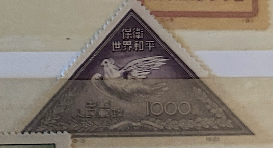
| SOURCE | TITLE| IMAGE MATCH | click to source page |
| HipStamp | China PRC - 1951 - Scott #110 - unused - Peace Bird Dove | Asia - China, General Issue Stamp / HipStamp | 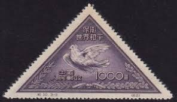 |
| eBay | VTG 1951 Chinese Defend World Peace Stamp, Picasso Dove, Triangle | eBay | 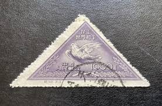 |
| chinesestamp.org | C010/JI10/纪10, Defend World Peace (2nd Set)《保卫世界和平（第二组）》 - Chinese Postage Stamps | China Postage Stamps | Chinese Stamp Album | China Philatel | ACPF | Stamps Catalogue of PRC | 中国邮票目录| |  |
| HipStamp | China Stamps: 1951 Sc#110-World Peace-Mint Stamps- 69 Years OLD Stamp Mint Stamp | Asia - China, General Issue Stamp / HipStamp | 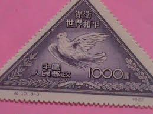 |
| HipStamp | China-1951-Sc#108-110 Picasso Painting-Peace Dove-Fancy Cancel VF Rare | Asia - China, General Issue Stamp / HipStamp | 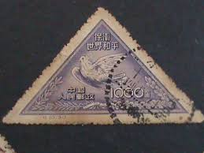 |
| What is the 1951 postage stamp about? |  | |
| Osta | Hiina 1951,rahutuvi,MNH,1000 (217847982) - Osta.ee |  |
| Todocolección | china 1951 - nuevos - sin goma- aniversario de - Buy Antique stamps of China on todocoleccion |  |
| Today's Stamp issued on UNESCO World Heritage Sites Series ll | 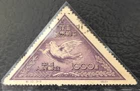 | |
| Carousell | China Stamps C10 MNH NGAI, Hobbies & Toys, Memorabilia & Collectibles, Stamps & Prints on Carousell | 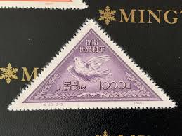 |
| S በ 出· American ISTORIO Tohn F. Kennedy Coin Stamp Portfolio មាមម្យយ្រតរិត PS 00 B |  | |
| Colnect | Briefmarke: Dove of Peace by Picasso (reprint) (China, Volksrepublik(Peace Campaign (2nd issue)) Mi:CN 114II,Sn:CN 109R,Yt:CN 905R,Sg:CN 1511R 📮 |  |
| Galéria Savaria | bélyeg kínai - Gyűjtemény | Galéria Savaria Archív Katalógus | 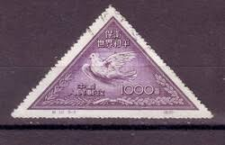 |
| Aukro | ČÍNA - 1951 - Mi 115 O | Aukro | 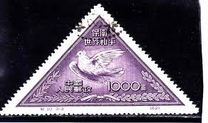 |
| Mercari | 紀10 世界の平和を守れ（第2次）（未使用2枚、使用済み1枚、3種完） - メルカリ | 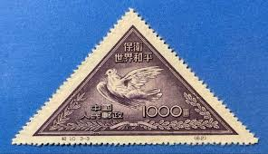 |
| eBay | CHINA SCOTT 110 STAMP MNH NO GUM 9611M | eBay |  |
| WordPress.com | Book Review: Such Is This World@sars.come | chinageeksarchive | 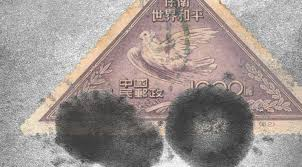 |
| Bob Shop | China - 1951 China peace dove triangles 2 used & 1 unused was listed for 50.00 on 10 Jan at 11:16 by Cape Town Coins CBD in Cape Town (ID:663667051) | 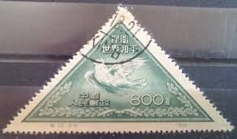 |
| Tradera | Se produkter som liknar Kina 1955 - 400 dollar.* på Tradera (711006563) | 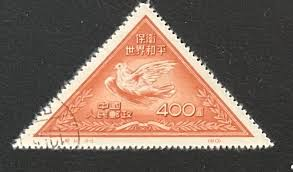 |
| btbf.no | 中国切手： （特28） 「原子炉完成」 2種完 未使用 25F M №14 | 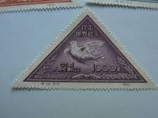 |
| Shutterstock | China Prc 1950 August 1 400 Stock Photo 2194447335 | Shutterstock | 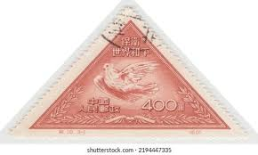 |
| Etsy | Postage Stamps / Sets - Lots / Rare Stamps of China / 1951 Year / Unused No Stamp / People's Republic of China (PRC) / in Perfect Condition - Etsy |  |
| eBay | PRC China Stamps: 1951 Picasso Dove, Short Set SC 108, 110 (2) P 12.5, Mint H | eBay |  |
| Etsy | Postage Stamps / Sets - Lots / Rare Stamps of China / 1951 Year / Unused No Stamp / People's Republic of China (PRC) / in Perfect Condition - Etsy Canada | 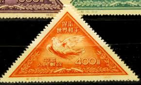 |
| eBay | China 1951 - Used stamp. Mi Nr.: 115 I. Original..........(DE) MV-9522 | eBay | 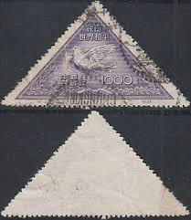 |
| Etsy | VTG 1951 Chinese Defend World Peace Stamp, Picasso Dove, Triangle - Etsy Finland | 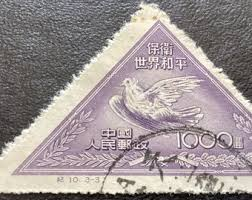 |
| La Philatélie Chinoise | Réimpressions de la R.P.C. – La Philatélie Chinoise Paris |  |
| scgwys.com | 四川古玩古董|钱币邮票|纪10邮票 | 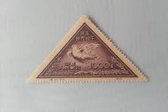 |
| Shutterstock | Triangle Post Stamps: Over 788 Royalty-Free Licensable Stock Photos | Shutterstock |  |
| polareum.com | Yahoo!オークション 12□中国切手 1951年 紀10 「世界の平和を守れ 第 | 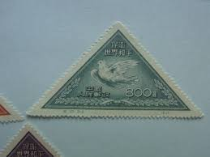 |
| Etsy | Postage Stamps / Sets - Lots / Rare Stamps of China / 1951 Year / Unused No Stamp / People's Republic of China (PRC) / in Perfect Condition - Etsy Australia |  |
| Hallo, may be China Stamps??? | 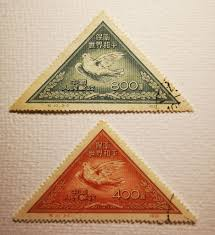 | |
| Margipood | China - Page 8 of 44 - Margipood | 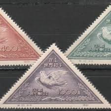 |
| clientsup.app | 39 中国切手 初版 未使用 紙付 紀9 ＜中国共産党30周年＞ 3種 | 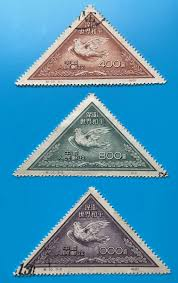 |
| eBay | China (PRC) 1951 Sc#108-110 "World Peace (Picasso Dove)" reprint Mint/NH VF | eBay |  |
| lastdodo.fr | Colombes de la Paix Catalogue de timbres - LastDodo | 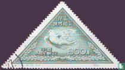 |
| Margipood | c-10 1951 - Margipood | 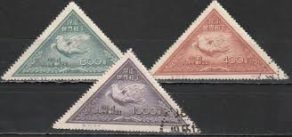 |
| オークファン | 切手 rry222 中華民国郵票 中国人民郵政 保衛世界和平 ４文字熟語 清郎世寧百駿圖 豚 貯金箱 唐物 中国古玩 時代物 骨董品 の入札履歴 - 入札者の順位 | 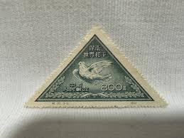 |
| Яндекс | Кампания за мир: Голубь мира Пикассо. Китай (КНР). 1955. Скотт: CN 110R; Михель: CN 115II. Гашен – купить в интернет-магазине Дракопанда на Яндекс Маркете, 4665731054 |  |
| yzzs.cc | 探寻中国邮政纪念邮票中动物形象- 集邮- 仪征之声 |  |
| PicClick | CHINA STAMPS COMB. Shipping $1.00 - PicClick | 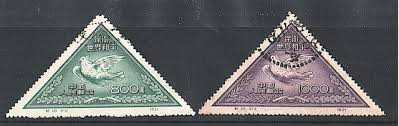 |
| Mercari | 中國人民郵政 保衛世界和平 三角切手4枚 - メルカリ | 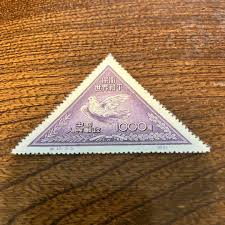 |
| YouTube | 中华邮票收藏文化百科]（邮票，集邮）纪10保卫世界和平第二组邮票- YouTube | 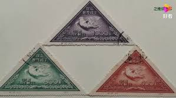 |
| 麦稀奇 | 老特纪- PCAI紫鑫阁钱币- PCAI紫鑫阁钱币- 麦稀奇 | 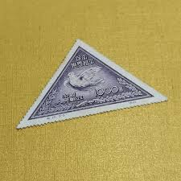 |
| Coming up soon! PRC, TAIWAN, HK and other countries, available at start price of IDR 10.000 only AT YIP's Bandung... [www.chinaphilabonn.com/auction](http://www.chinaphilabonn.com/auction?fbclid ... | 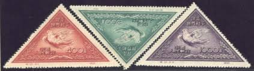 | |
| Margipood | c2-2 1951 tuvid - Margipood | 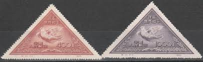 |
| raindrop.jp | 世界の様々な変形切手・小型シート（特別編） | 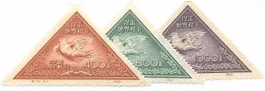 |
| raindrop.jp | 鳥類の切手｜ハト目ハト科 平和を象徴する鳥類 ハト（鳩） | 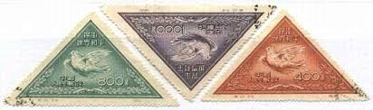 |
| Yahoo | 全新嚴選紀10再版新票一組全品配票專貼新中國紀特文編郵票單枚無瑕珍藏發送隨機多枚指定請留言 | 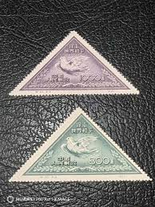 |
| 麦稀奇 | 稀缺原版票】】纪10和平《《原版》》 新全ASG85OP，早期稀缺的不可再生资源，能到达评级标准的货源十分有限，是老纪特精品中的精华，随时ASG评级的兴起，老纪特原版票必将成为炙手可热的臻品！！末图以往裸票价格做参考。 - 洪涛臻品微拍- | 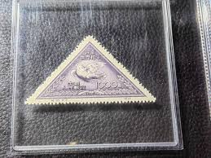 |
| eBay UK | China 1951 Peace (2nd Issue) set of 3 Dove MH / Used stamps SG1510 - 1512 | eBay UK | 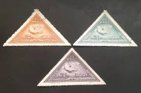 |
| an-bud.com | 中国切手 未使用③ Yahoo!オークション -「中国 切手 未使用 | 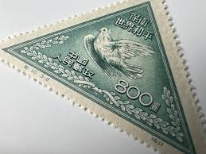 |
| 麦稀奇 | 保卫世界和平一套三枚。中国第一套三角邮票。 - 笑丫收藏小店- 笑丫收藏小店- 麦稀奇 | 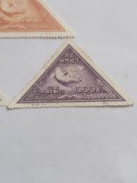 |
| eBay | PR China Stamps C1 CPPCC, C5 &C10 Peace, C8 Sino-Soviet Friendship 纪1 , 5, 8, 10 | eBay | 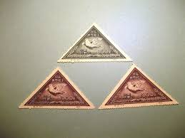 |
| eBay | CHINA 1951-53 BIRDS...DOVE of PEACE...32 stamps FINE USED | eBay | 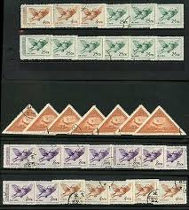 |
| Xabusiness.com | 1953 China Stamps | 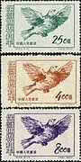 |
| eBay | Travelstamps: 1950 China Stamps Sc # 1L154 Mi 176 World Peace Dove MNH NGAI | eBay | 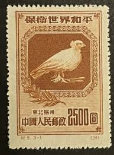 |
| eBay | Olive Used Asian Stamps for sale | eBay | 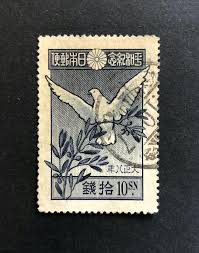 |
| Stamp Auction | H.R. Harmer, Inc. Sale - 3012 Page 100 | 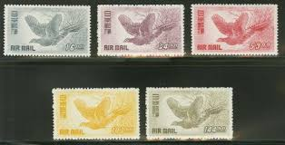 |
| HipStamp | China Stamps: 1950 Sc#59- World Peace Campaign- Mint Stamps- 72 Years OLD Stamp | Asia - China, General Issue Stamp / HipStamp |  |